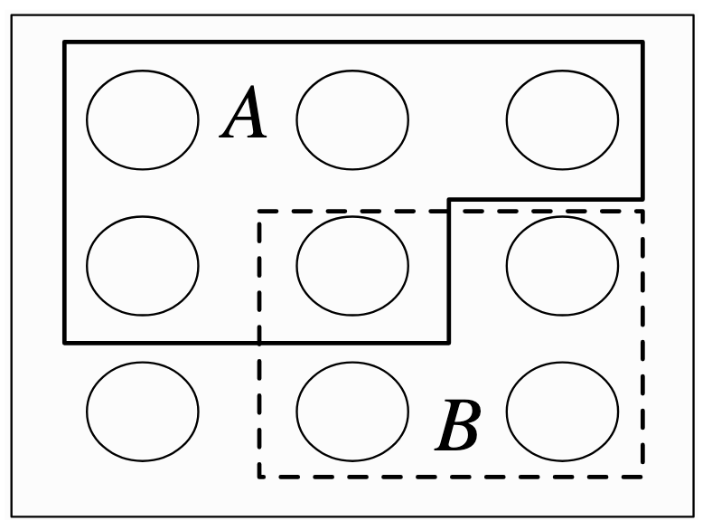
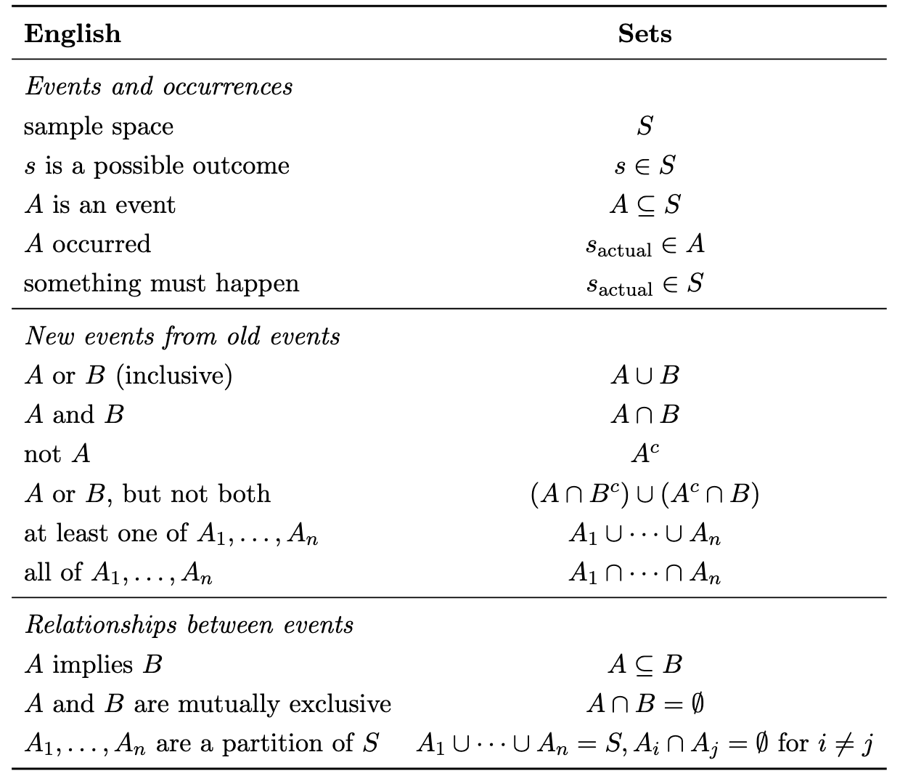
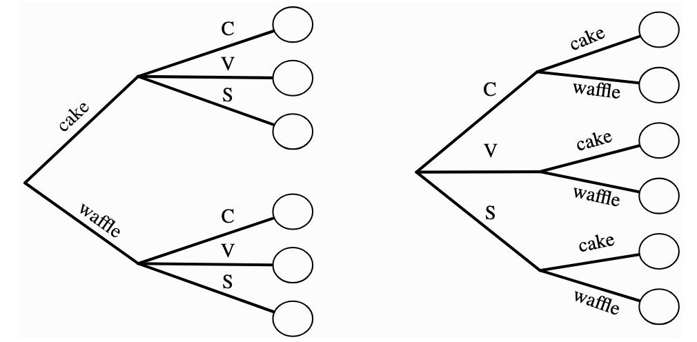
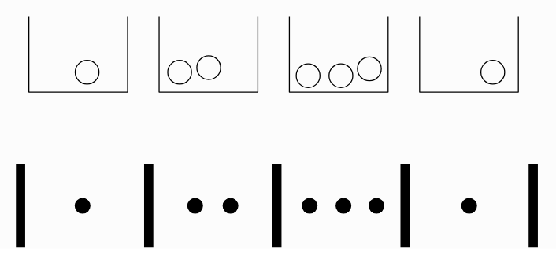
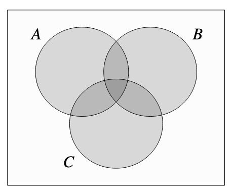
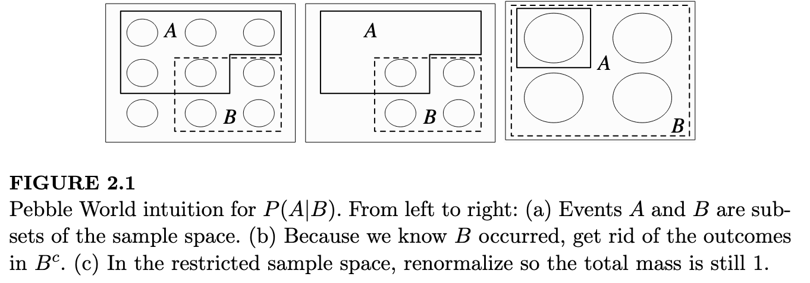

0. Some Useful Approaches
- Label objects even if they seem indistinguishable
- Adjust for overcounting
- Is the complement \(A^C\) easier to solve for than \(A\) directly? Then use the fact that \(A^C = 1 - A\)
- Calculate the same thing in alternative ways to verify the answer
- Check with specific cases – edge cases and the simplest non-trivial case
- Whenever you see a series of factorials think about Taylor expansions. The two that crop up most are geometric series and \(e^x\)
1. Probability Fundamentals and Set Theory
Logic is the mathematics of certainty; probability is the mathematics of uncertainty
1.1. Set Theory
Concepts from set theory are useful to formalise probability.
The sample space \(S\) of an experiment is the set of all possible outcomes of the experiment.
An event \(A\) is a subset of the sample space S, and we say that A occurred if the actual outcome is in A.

A concise summary of useful set notation:

1.2. Naive Definition of Probability
The earliest definition of probability made some very strong assumptions that every outcome was equally likely, so the probability of an event \(A\) occurring could be calculated by counting the number of favourable outcomes, i.e.
\[ P_{naive}(A) = \frac{\lvert A \rvert}{\lvert S \rvert} \]
1.3. Multiplication Rule
If we have Experiment A with \(A\) possible outcomes, followed by experiment B with $b$ possible outcomes, the total number of combinations is \(ab\).
This follows intuitively if we consider the tree diagram. For example, we choose ice cream cones from one of 3 flavours and one of 2 possible cone types. The total number of possible combinations is \(3 \times 2\).
Furthermore, it doesn’t matter which order we picked – flavour first or cone first.

2. Counting
2.1. Sampling with Replacement, Order Matters
We have \(n\) objects and choose \(k\) with replacement.
There are \(n\) possibilities each time, so this is obviously
\[ N_{outcomes} = n^k \]
2.2. Sampling without Replacement, Order Matters
We have \(n\) objects and choose \(k\) without replacement.
The are \(n\) options for the first choice, then \(n-1\) for the second, then \(n-2\) for the third… all the way to \(n-k+1\) for the kth.
Therefore the result is:
\[ N_{outcomes} = n(n-1)(n-2)...(n-k+1) = \frac{n!}{(n-k)!} \]
2.3. Sampling without Replacement, Order Doesn’t Matter
This is essentially the same problem as previously but we have over-counted. Now that we don’t care about the order, we can say that there $k!$ ways of arranging the objects, so we divide by this to correct for the duplicates.
\[ N_{outcomes} = \frac{n!}{(n-k)! k!} \]
By convention, this is defined as the binomial coefficient \(n \choose k\) since it crops up so frequently.
2.4. Sampling with Replacement, Order Doesn’t Matter
This is the least obvious case.
It is equivalent to the stars and bars problem. Imagine putting \(k\) indistinguishable balls into \(n\) distinguishable buckets. We are choosing \(k\) objects in total, and those objects can be attributed to one of the \(n\) labelled categories.
In the example below, there are \(n=4\) buckets and \(k=7\) balls.

The lower picture is an alternative representation. We have \(n-1\) bars (\(|\)) (because the ends are fixed)and \(k\) stars (\(*\)).
Therefore, there are \(n+k-1\) “things” choose from, and if we can define the arrangement by fixing the placement of the \(k\) stars.
\[ N_{outcomes} = {n+k-1 \choose k} \]
Note that this is also equivalent to fixing the bars, and by symmetry:
\[ {n+k-1 \choose k} = {n+k-1 \choose n-1} \]
3. Story Proofs
“Proof by interpretation”.
Arrive at the same result in two different ways to prove that the expressions are equivalent.
Example 1
From \(n\) people pick a team of \(k\) players. You could either specify the \(k\) people on the team or the \(n-k\) people not on the team.
\[ {n \choose k } = {n \choose n-k } \]
For example, you have 10 people and want to pick 4 for a team. Either pick the 4 players, or the 6 non-players.
Example 2
From \(n\) people pick a team of \(k\) players, one of whom is the captain.
\[ n {n-1 \choose k-1} = k {n \choose k} \]
LHS: Choose the captain first ( \(n\) possibilities) then the rest of the team ( \(k-1\) players from the remaining population of \(n-1\) people)
RHS: Choose the \(k\) players first, then pick one of those team members to be captain.
Example 3
Vandermonde’s identity
We have \(m\) men and \(n\) women. There are \(k\) chairs for them to sit on.
\[ {m+n \choose k} = \sum_{j=0}^k {m \choose j} {n \choose k-j} \]
LHS: The choice directly.
RHS: First pick one man, then two men, then three men… then \(j\) men. Sum over every value of \(j\).
4. The General (Non-Naive) Definition of Probability
4.1. Definition
A probability sample consists of \(S\) and \(P\), where \(S\) is a sample space and \(P\) is a function which takes an event \(A \subseteq S\) as input and returns \(P(A) \in [0, 1]\) as outputs, such that the following two axioms hold:
Axiom 1: Impossible events have probability 0 and certain events have probability 1.
\(P(\emptyset)=0, P(S)=1\)
Axiom 2: We can add the probabilities of disjoint events to get their union.
\(P(\bigcup_{n=1}^{\inf}) A_n = \sum_{n=1}^{\inf} P(A_n) \text{if} A_1, A_2, ..., A_n \text{are disjoint}\)
Example
The birthday problem.
Probability of a shared birthday in a group of n people.
The intuition: \(k\) isn’t the relevant value here. The number of pairs, \(k \choose 2\) , is the relevant value because we have that many pairs, each of which could result in a match.
4.2. Properties of Probability
The following useful properties follow from the axioms of probability.
Property 1: Probability of Complement
\(P(A^C) = 1 - P(A)\)
Proof:
Event \(A\) and its complement \(A^C\) cover the full sample space by definition. From Axiom 1, the probability of the entire sample space is 1.
\(P(A \cup A^C) = P(S) = 1\)
From Axiom 2, the probability of the union of disjoint sets is the sum of their probabilities.
\(P(A \cup A^C) = P(A) + P(A^C)\)
Equating the two expressions and rearraging gives the result.
Property 2: P(A) when A is contained in B
If \(A \subseteq B\) then \(P(A) \le P(B)\)
Proof:
An alternative way of writing $P(B) is as disjoint sets (“disjointification”)
\(B = A \cup ( B \cap A^C)\)
Since these sets are now disjoint, we can apply Axiom 2:
\[ P(B) = P(A \cup ( B \cap A^C)) = P(A) + P(B \cap A^C) \]
Probabilities are always non-negative, so \(P(B \cap A^C)\) term is non-negative, therefore \(P(B) \ge P(A)\)
4.3. Inclusion-exclusion
This is another property which follows from the axioms, but is important enough that it warrants specific attention.
Inclusion-exclusion is a formula for finding the probability of a union of events when the events are not necessarily disjoint.
4.3.1. Two Events
\(P(A \cup B) = P(A) + P(B) - P(A \cap B)\)
Powerful identity that is useful when finding the probability of a union.
Proof: Start by disjointifying the union.
\(P(A \cup B) = P(A \cup (B \cap A^C))\)
Now we can apply Axiom 2: \(P(A \cup B) = P(A) + P(B \cap A^C)\)
We can express \(P(B)\) as a union of disjoint sets:
\(P(B) = P(B \cap A) + P(B \cap A^C)\)
Rearranged this gives: \(P(B \cap A^C) = P(B) - P(B \cap A)\)
Substitute that into the expression for \(P(A \cup B)\) and note that the order of an intersection doesn’t matter (\(P(B \cap A) = P(A \cap B)\)). The result immediately follows.
4.3.2. Three Events
The same logic applies to more events. Essentially we add up the areas and subtract the intersections that were double counted.

For three events \(A,B,C\):
\[ P(A \cap B \cap C) = P(A) + P(B) + P(C) - P(A \cap B) - P(B \cap C) - P(A \cap C) + P(A \cap B \cap C) \]
Intuitively, we are adding up the big circles, then realising we’ve double counted the oval areas so subtract those two-term areas, then realising that removes the central triangle entirely so add back the three-term area.
4.3.3. The General Case
The pattern becomes obvious, so we can write the general case:
\[ P(\bigcup_{i=1}^n A_i) = \sum_{i=1}^n P(A_i) - \sum_{i<j} P(A_i \cap A_j) + \sum_{i<j<k} P(A_i \cap A_j \cap A_k) - ... + (-1)^{n+1} P(A_1 \cap ... \cap A_n) \]
Example
De Mortmont’s matching problem.
A problem that can be solved using inclusion-exclusion.
Whenever you see a series of factorials think about Taylor expansions. The two that crop up most are geometric series and \(e^x\).
5. Independence
5.1. Definition for Two Variables
Events \(A\) and \(B\) are independent if:
\(P(A \cap B) = P(A)P(B)\)
In words, if A occurred it gives no information on whether B occurred.
Note that independence often gets confused with disjoint, but they are almost the opposite. If \(A\) and \(B\) are disjoint it means that if \(A\) occurred then \(B\) cannot occur; A occurring gives us complete information over whether B occurred.
Notation comment: \(P(A,B)\) means intersection i.e. \(P(A \cap B)\), \(A\) and \(B\) both occur.
5.2. Definition for Three Variables
For three events \(A, B, C\) to be independent, we need pairwise independence and independence of all three together. The former does not imply the latter.
Pairwise independences:
\(P(A,B)=P(A)P(B), P(A,C)=P(A)P(C), P(B,C)=P(B)P(C)\)
Triple independence:
\(P(A,B,C) = P(A)P(B)P(C)\)
Example
Newton Pepys problem.
6. Conditional Probability
Conditioning is the soul of statistics
How should you update probabilities given new information?
6.1. Definition
\(P(A|B) = \frac{P(A \cap B)}{P(B)} \text{, if } P(B)>0\)
The intuition from this is obvious from the Venn diagrams (in other words, the pebble world interpretation). If we know \(B\) occurred, we re-normalise the probability of \(A\) as if \(B\) is our sample space.

6.2. Theorems
Theorem 1: \(P(A \cap B)\) expressed two ways
Note that the order of variables in the intersection doesn’t matter, it is still the overlap of the Venn diagram. So:
\(P(A \cap B) = P(B \cap A)\)
Applying the definition of conditional probability to both sides:
\(P(A \cap B) = P(B|A)P(A) = P(A|B)P(B)\)
Theorem 2: Intersection of n events
The intersection of \(n\) events can be written as the conditionals by recursively applying theorem 1:
\(P(A_1, A_2, ..., A_n) = P(A_1)P(A_2|A_1)P(A_3|A_1,A_2)...P(A_n|A_1,...,A_{n-1})\)
Theorem 3: Bayes rule
Rearrange the result from Theorem 1 to get Bayes rule.
This gives us the way to update our posterior given likelihood, prior and evidence.
\(P(A|B) = \frac {P(B|A)P(A)}{P(B)}\)
References
- Stat 110 Lectures
- Introduction to Probability - Blitzstein and Hwang